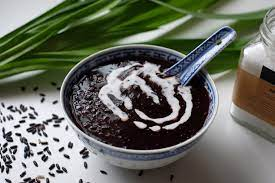

Pulut Hitam

Description
'Pulut hitam' is a dessert made of black glutinous rice and coconut milk. This Southeast Asian dessert is then sweetened with palm sugar and rock sugar. Having the consistency of rice porridge, this black sticky rice dessert is very rich and creamy in flavour.
Ingredients
- 4tbsp Black glutinous rice
- 2 Pandan leaves
- 815ml Water
- 70g Rock sugar
- 30g Palm sugar
- 1/2tbsp Corn starch
- Coconut milk (to your liking)
Steps
- Soak black glutinous rice for at least 5 hours. Boil water with black glutinous rice and pandan leaves at high heat. Once it boils, reduce heat to low and let it simmer for 30 minutes until the black glutinous rice puffs up.
- Add rock sugar and palm sugar to sweeten the dessert. White sugar may be added, if necessary. Optionally, mix cornflour with water and add into the dessert to thicken it. Serve warm or chilled with a drizzle of coconut milk.
Source
Send me back!